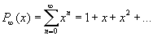
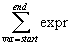
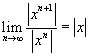
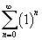
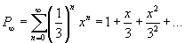
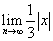
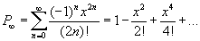
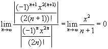
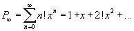
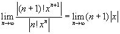

This device cannot display Java animations. The above is a substitute static image
1. Geometric power series
The applet shows the power series

Note that the graph only shows
Pnmax (where
nmax is adjustable), since computing an infinite series by just adding up the terms would take infinite time. Also note that this applet uses sum(var,start,end,expr) to define the power series. The sum( ) operation adds up the terms of a sequence, where var is the name of the summation variable (usually
n), start is the initial value, end is the ending value (usually
nmax in this applet), and expr is the expression to be summed. This is the same as

For a power series, the expression is a function of both
n and
x. The applet uses (
x -
c) as the base of the power functions, but in this example
c = 0. We know that a geometric series converges when the common ration is between -1 and 1, so this series converges for |
x | < 1. We can also use the ratio test to confirm this:

so the radius of convergence is 1. This means that the series converges when |
x | < 1. We still need to check whether it converges when |
x | = 1 (i.e., when
x = 1 or when
x = -1). To check these last two cases, we just plug in the values for
x to see if the series of constants converges, using one of the tests we have studied. In other words, does

converge (and the same question for
x = -1)? Since the base of the exponent is 1 and constant, this obviously diverges because the
nth term does not go to zero. Similarly, if the base is -1 we have an alternating series, but the terms don't get smaller, they just switch back and forth from 1 to -1, so the series doesn't converge here, either. Hence the interval of convergence is |
x | < 1. You can move the
x slider to move the black point around on the curve, noting that when you get outside the interval of convergence, the point heads off to infinity. You can also move the
c slider to see what effect changing the center of the power series has on the graph (and hence see why it is called the center).
2. Another geometric power series
Select the second example from the drop down menu, showing

(again,
c = 0 initially and
nmax = 10 for the graph). Using the same ratio test as above, we can find that the limit of the ratio of successive terms is

so the radius of convergence is 3 in this case. Since this is a geometric series with common ration
x/3, the series will converge when |
x | < 3. You can see from the graph, by moving the
x slider, that this roughly corresponds to the part of the graph where the black point doesn't head off to infinity (it doesn't correspond exactly, since we are only graphing the sum of 10 terms of the series instead of all the terms).
3. A more complex series
Select the third example from the drop down menu, showing

Note that in this case we used more complicated exponents to deal with the fact that some of the terms are missing. If we had written it in a form where the exponent on
x was
n, some of the terms would be zero and we would not be able to use the ratio test. Using this test on the series as written gives us:

Since the limit is zero, this series converges for all
x. In fact, we will see later that it is equal to cos
x. If you happen to zoom out, you will notice that the graph does not converge for all
x. This is because we are only graphing 10 terms. If you move the
nmax slider, you will notice that the graph converges on a smaller interval. Similarly, if you make
nmax bigger, it will converge on a larger interval. If you could make
nmax equal to infinity, it would converge for all
x.
4. Very limited convergence
Select the fourth example, showing

Using the ratio test we get:

Since this limit does not not exist, the series only converges for
x = 0 (which is
c in this example). If you set
nmax = 100, you will see more clearly on the graph that the interval of convergence is very small (warning: don't set
nmax much bigger than this, as the software will take a long time to compute the series).
Other 'Sequences and Series' topics
(C) 2011 Copyright Math Open Reference.
All rights reserved